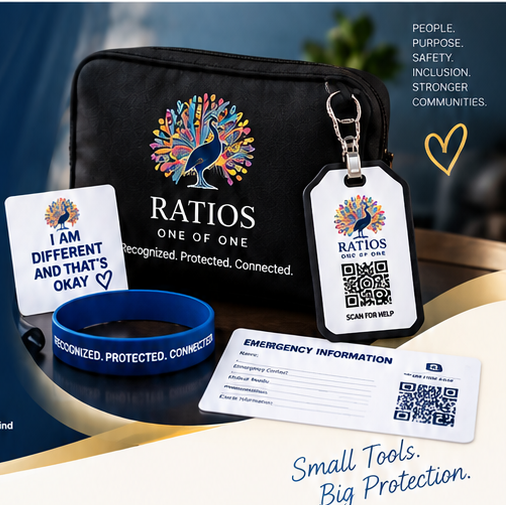
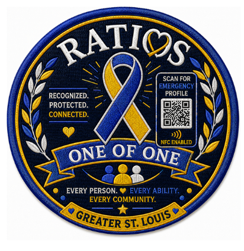
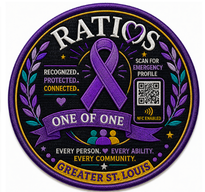
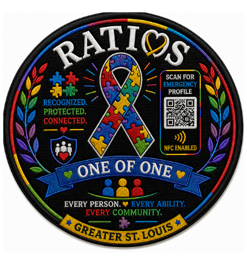
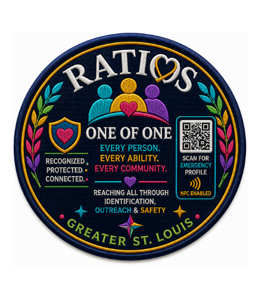

WEARABLE IDENTIFICATION
LifePatch™ + LifeBand™
Visible, everyday identification that helps others recognize that additional communication or safety support may be needed.
RATIOS Safety Kits help individuals, families, and caregivers prepare for emergencies, stay connected, and increase safety for loved ones with developmental, cognitive, intellectual, and communication disabilities.

Each safety kit brings physical identification and digital access together so critical information can travel with the individual — at home, at school, in the community, and during emergencies.
Visible, everyday identification that helps others recognize that additional communication or safety support may be needed.
Portable identifiers and emergency information designed for backpacks, keychains, wallets, bags, and other everyday essentials.
A secure emergency profile that connects authorized caregivers and first responders to critical identification, communication, and support information.
LifePatch™ gives families options that feel personal while keeping emergency identification visible and connected to the RATIOS safety system.




Submit a request for a safety kit or sponsor a kit for a family in need.
Kits are assembled with the selected tools and resources.
Kits are shipped or distributed through our community partners.
Individuals are more prepared, more connected, and more independent.
RATIOS is designed to work across the places where safety, identification, communication, and support matter most.
Children and adults with developmental, cognitive, intellectual, or communication disabilities.
Recognized as an individual — not a diagnosis.Keep essential identification, communication preferences, and emergency support information connected.
Support safer transitions, community activities, transportation, and day-to-day student safety.
Gain faster access to information that can help shape a safer, more informed response.
Help extend identification, preparedness, outreach, and disability-safety resources into the community.